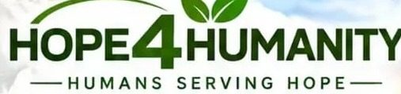

Gaza · seit über zweieinhalb JahrenMenschen helfen Menschen.
Trinkwasser, warme Mahlzeiten und feste Patenschaften für Familien – direkt, dokumentiert und mit langem Atem. Ein eigenständiges Projekt, begleitet und unterstützt von Dar Al-Rahma.
Brunnenprojekte UnterstützenNicht wegschauen – sondern helfen
Hope4Humanity ist eine Privatinitiative, die gerade den Verein hope4humanity e.V. gründet. Ziel: an mehreren Orten in Gaza feste, verlässliche Hilfe aufbauen – und die Würde der Menschen schützen.
Verteilt von Helfern vor Ort in Khan Yunis (Mawasi), Jabalia und Gaza-Stadt.
Nicht nur heute einen Kanister verteilen – sondern dauerhaft Zugang zu Wasser schaffen: in Nordgaza und im zentralen Gazastreifen.
Über den Gazahilfspool – ein Teil von Hope4Humanity, getragen von denselben Menschen.
Trinkwasser & Hygiene
Wasser verteilen und Brunnen bauen – für Trinken, Kochen und Waschen.
Warme Mahlzeiten
Suppenküchen und Essen, auch während des Ramadan.
Gazahilfspool →
Feste Patenschaften für 12 Familien, Richtwert 150 € im Monat.
Schwebende Spenden
Spontane Hilfe, etwa Babymilch für ein Kinderkrankenhaus.
2 Projekte. 2 Standorte. 1 Ziel.
Zwei Brunnen an zwei Orten im Gazastreifen – unabhängig voneinander, mit demselben Ziel: Wasser, das bleibt.
Ein Brunnen für ein Zeltlager
Ein neuer Brunnen soll ein Lager mit 120 Zelten dauerhaft mit Wasser versorgen.
Pumpe und Elektrik
Der Brunnen ist schon gebohrt. Es fehlen noch Pumpe und Elektrik, damit endlich Wasser gefördert werden kann.
- 💧 Trinken können
- 🍲 Kochen können
- 🚿 Sich waschen können
- 👨👩👧 Kinder versorgen können
- 🤲 Ein Stück Würde zurück
Schon verteilt: 15.000 Liter frisches Trinkwasser
- 📍 Khan Yunis – Mawasi
- 📍 Jabalia
- 📍 Gaza-Stadt
Keine EintagsfliegeMehr als zweieinhalb Jahre Erfahrung
- Dokumentiert: Jede Hilfe wird mit Fotos und Videos festgehalten.
- Belegt: Belege werden gesammelt.
- Im Kontakt: regelmäßig mit Familien und Helfern vor Ort.
- Gewachsenes Vertrauen: Die Wege sind bekannt – private Hilfe kommt an.
Warum sie weitermachenMenschlichkeit gilt jedem Menschen
Nicht Religion, nicht Herkunft, nicht Hautfarbe, nicht Nationalität – Menschlichkeit kennt keine Grenzen. Der Antrieb: Vertrauen, Gerechtigkeit, Nächstenliebe und Solidarität. Wir sind gekommen, um zu bleiben – für jede Familie, die auf uns zählt.
GazahilfspoolFamilienpatenschaften – ein Teil von Hope4Humanity
Aus einem Live-Stream vor rund drei Jahren wurden feste Patenschaften: Heute bekommen zwölf Familien Monat für Monat Lebensmittel, Medikamente und Kleidung. Zum Gazahilfspool mit allen Fotos →
Die Aufrufe von Hope4Humanity
Jeder Euro kann helfen
PayPal
Für die Brunnen, Trinkwasser, Mahlzeiten und schwebende Spenden – bitte den Zweck dazuschreiben.
Katringrohrock@freenet.deTelegram
Neuigkeiten, Dokumentation und Kontakt zur Initiative.
hope4humanity auf TelegramDie Spende geht direkt an die Initiative, nicht an Dar Al-Rahma. Private Zuwendung ohne Spendenquittung – der Verein hope4humanity e.V. ist in Gründung.